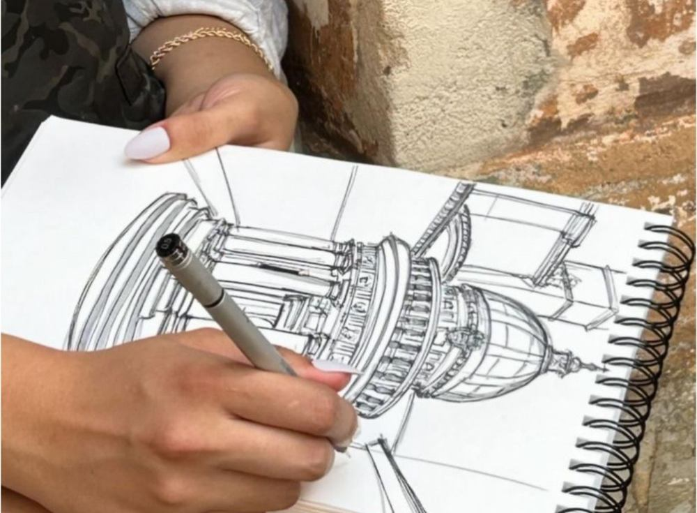
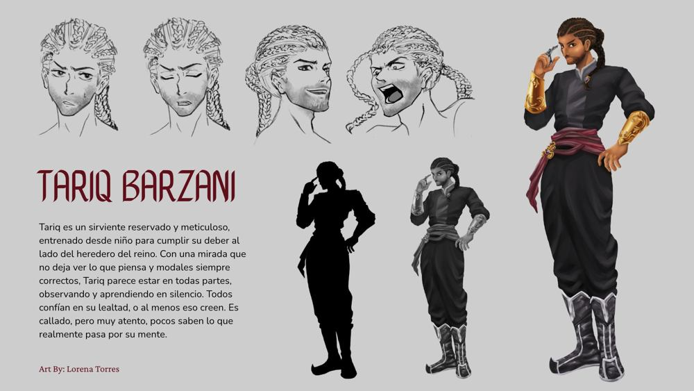
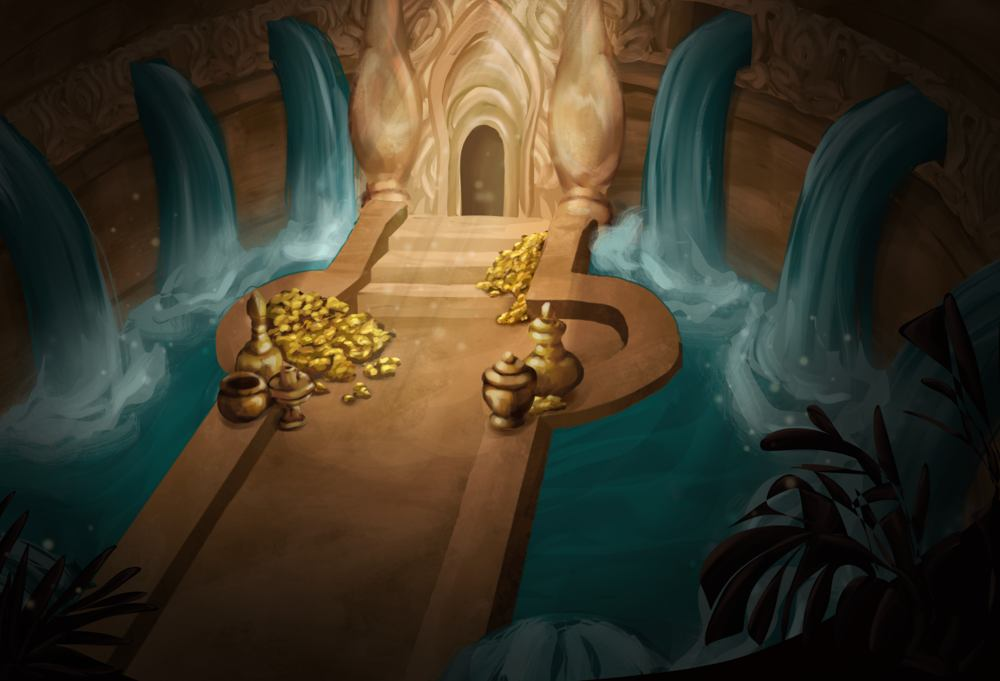

2024

Summer Architectural Sketchbook
ISTITUTO EUROPEO DI DESIGN, ROMA

Soy Valeria Lorena Torres Cortés, estudiante de Diseño Gráfico Digital en la Universidad La Salle. Me considero una persona curiosa, detallista y perseverante. Disfruto explorar diferentes conceptos y recursos gráficos para transformar ideas en propuestas visuales funcionales, atractivas y con identidad propia.

Avanzado
Intermedio-Avanzado
Básico
2024

ISTITUTO EUROPEO DI DESIGN, ROMA
2025

ERIKA SINZER
2025

ERIKA SINZER